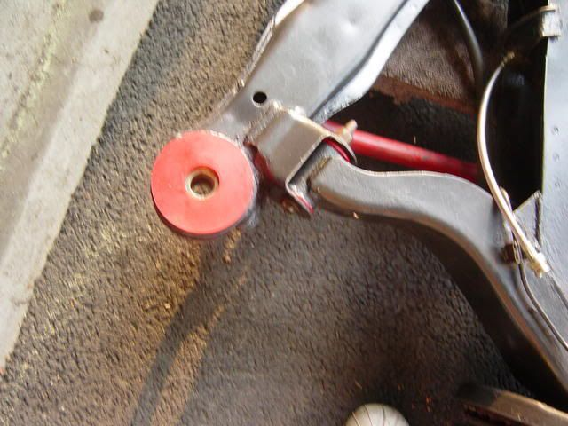

-
http://im1.shutterfly.com/media/47b9da2 … /ry%3D480/
thats my rear control arm.
i was reading and people said leave the sleeve for the front control arm, but remove the rears.
but if i remove the rear sleeve then the bushing will have "play" where right now its pretty snugg. can anyone help?
thank you.My Build Thread -

1985 Nissan 300ZX 2+2- My first Z, back in the family
1987 Nissan 300ZX Turbo RIP 4/87 - 4/28/2011
Under Construction: 1986 Nissan 300ZX NA2T Slicktop
Originally posted by Tempestas -
yea then i read this and it threw me off
viewtopic.php?f=2&t=11207&hilit=sleeve+confused
so you leave the outer sleeves in both?People get confused. Leave the sleeve in on the LCA's and remove it from the crossmember.My Build Thread -
I left my "sleeves" in. Lubed the bushings good and pressed them in. Very tight, no issues.
Best pic I have:

-
thank you! ill do the same.
lol that rear crossmember bushing was a pain, mine was very good condition but the sleeve was rusted in…gold ol' air hammer did the trick though.My Build Thread -
gary's install instructions specify to remove the sleeves.
they were rusted in on mine, it was a royal beyotch. i kicked the shit out of the crossmember while doing it. luckily i'm installing solid mounts, because the poly bushings would get torn up.

1988 300zxt. gt35, stance, etc. Wheels: Varrstoen ES2 18x9.5 et-13 225/40. 18x10.5 et0 245/40
1990 jetta vr6'd -
Sorry to bump an old thread but spotted this while searching for subframe bushing info (I'll be replacing mine this week). So, at least one person left the sleeve in on the rear subframe. Any others? If mine gives me a fight do I absolutely have to remove it? (I know all the guides say to, but I'm just asking since I see here that one person didn't).
1985 300ZX Turbo GLL ^Click for log^
Originally posted by nater86zx -
Air chisel. Make it your bitch.turblown wrote: Sorry to bump an old thread but spotted this while searching for subframe bushing info (I'll be replacing mine this week). So, at least one person left the sleeve in on the rear subframe. Any others? If mine gives me a fight do I absolutely have to remove it? (I know all the guides say to, but I'm just asking since I see here that one person didn't).86na - BlueZ
Shiro #366 - Kouki Monster
85t - Mr Tickles -
If it gives you a fight, use a c-clamp.My Build Thread -
the 4 i've done, a cruddy big flat blade/chisel, hammer and about 5min, and theyre out. rusted in or not! worst one took maybe 10 min…Damn dirty angels....these cars!
Current Daily Driver - 86 Turbo.
Under the cover - THE BANANA… that needs to be re-energized.
sigpic -
easiest way. use a chisel to bend an edge over. use a 3 inch spike/nail and put it behind the chiseled part until you make a nice enough place to shove some needle nose vice grips or pliers.
grab pliers real good. give it a nice "spin", and the sleeve will just peel itself from the sides pretty easy.

Copyright © 2006–. All rights reserved. Privacy Policy